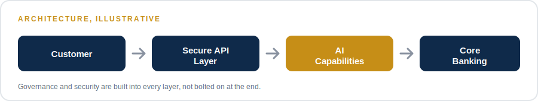
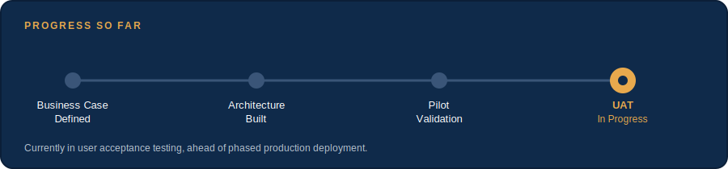

NextEmTech
Next Emerging Technology
Project Manager / Solutions Architect

Modernize customer banking services, improve operational efficiency, and establish a secure, cloud-native foundation for AI-powered fintech innovation — within a regulated financial environment.
Defined the business case, governance model, and success criteria. Built the project plan, architecture, and roadmap. Led cross-functional teams delivering AI capabilities, secure APIs, and digital banking services using a hybrid predictive-Agile delivery model.
A secure, scalable AI-powered banking platform now in pilot validation and user acceptance testing — built for a controlled, phased path to full production deployment.
The architecture is built, the pilot is validated, and the platform is now in user acceptance testing ahead of full deployment. Governance and security were designed in from day one, not retrofitted — so the path to production is about proving the system at scale, not redesigning it.
